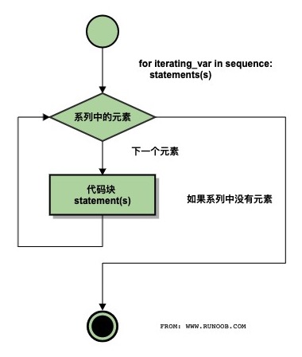

Sentencias de bucle en Python3
Este capítulo presentará el uso de las sentencias de bucle en Python.
Las sentencias de bucle en Python son for y while.
El diagrama de estructura de control de las sentencias de bucle en Python se muestra a continuación:

Palabras clave y métodos de control de bucles
| Palabra clave / Función | Descripción | Ejemplo |
|---|---|---|
for |
Bucle de iteración, utilizado para recorrer secuencias u objetos iterables. | for i in list: |
while |
Bucle condicional, se ejecuta mientras la condición sea True. | while x > 0: |
break |
Termina inmediatamente el bucle actual. | break |
continue |
Omite el código restante de esta iteración y pasa a la siguiente. | continue |
else (bucle) |
Se ejecuta cuando el bucle termina normalmente (sin break). | for i in range(3): ... else: ... |
pass |
Sentencia de marcador de posición en el bucle (operación nula). | for i in range(5): pass |
range() |
Genera secuencias de enteros, a menudo usada con el bucle for. | range(0, 5) |
enumerate() |
Obtiene índice y valor simultáneamente al iterar. | for i, v in enumerate(list): |
Bucle while
La forma general de la sentencia while en Python es:
while 判断条件(condition)：
执行语句(statements)……
El diagrama de flujo de ejecución es el siguiente:

Demostración en Gif de la ejecución:

También hay que prestar atención a los dos puntos y la indentación. Además, en Python no existe el bucle do..while.
El siguiente ejemplo usa while para calcular la suma del 1 al 100:
Ejemplo
El resultado de la ejecución es el siguiente:
1 到 100 之和为: 5050
Bucle infinito
Podemos implementar un bucle infinito estableciendo una condición que nunca sea false, por ejemplo:
Ejemplo
Al ejecutar el script anterior, el resultado es el siguiente:
输入一个数字 :5 你输入的数字是: 5 输入一个数字 :
Puedes usar CTRL+Cpara salir del bucle infinito actual.
El bucle infinito es muy útil para las solicitudes en tiempo real de clientes en un servidor.
Bucle while con sentencia else
Si la condición después de while es false, se ejecuta el bloque de sentencias de else.
El formato de sintaxis es el siguiente:
while <expr>:
<statement(s)>
else:
<additional_statement(s)>
Si la condición expr es true, se ejecuta el bloque de sentencias statement(s); si es false, se ejecuta additional_statement(s).
El bucle imprime números y evalúa su magnitud:
Ejemplo
Al ejecutar el script anterior, el resultado es el siguiente:
0 小于 5 1 小于 5 2 小于 5 3 小于 5 4 小于 5 5 大于或等于 5
Grupo simple de sentencias
Similar a la sintaxis de la sentencia if, si el cuerpo de tu bucle while contiene solo una sentencia, puedes escribir esa sentencia en la misma línea que while, como se muestra a continuación:
Ejemplo
Nota:Puedes interrumpir el bucle infinito anterior usando CTRL+C.
Al ejecutar el script anterior, el resultado es el siguiente:
¡Bienvenido a 菜鸟教程! ¡Bienvenido a 菜鸟教程! ¡Bienvenido a 菜鸟教程! ¡Bienvenido a 菜鸟教程! ¡Bienvenido a 菜鸟教程! ……
Sentencia for
El bucle for de Python puede iterar sobre cualquier objeto iterable, como una lista o una cadena.
El formato general del bucle for es el siguiente:
Diagrama de flujo:

Ejemplo de bucle for en Python:
Ejemplo
El resultado de ejecutar el código anterior es:
Baidu Google Runoob Taobao
También se puede usar para imprimir cada carácter de una cadena:
Ejemplo
El resultado de ejecutar el código anterior es:
r u n o o b
Los valores de rango enteros se pueden usar junto con la función range():
Ejemplo
El resultado de ejecutar el código anterior es:
1 2 3 4 5
for...else
En Python, la sentencia for...else se utiliza para ejecutar un bloque de código después de que el bucle termine.
El formato de sintaxis es el siguiente:
for item in iterable:
# 循环主体
else:
# 循环结束后执行的代码
Cuando el bucle se completa (es decir, se han recorrido todos los elementos de iterable), se ejecuta el código de la cláusula else. Si durante el bucle se encuentra una sentencia break, el bucle se interrumpe y no se ejecuta la cláusula else.
Ejemplo
print(x)
else:
print("Finally finished!")
Después de ejecutar el script, el resultado es:
0 1 2 3 4 5 Finally finished!
El siguiente ejemplo de for usa la sentencia break, que sirve para salir del cuerpo del bucle actual; no se ejecutará la cláusula else:
Ejemplo
Después de ejecutar el script, cuando el bucle llega a "Runoob", sale del cuerpo del bucle:
循环数据 Baidu 循环数据 Google 菜鸟教程! 完成循环!
Función range()
Si necesitas iterar sobre una secuencia de números, puedes usar la función incorporada range(). Esta genera una secuencia numérica, por ejemplo:
Ejemplo
También puedes usar range() para especificar valores en un intervalo:
Ejemplo
También puedes hacer que range() comience en un número específico y use un incremento diferente (incluso negativo, a veces llamado 'paso'):
Ejemplo
Números negativos:
Ejemplo
Puedes combinar las funciones range() y len() para iterar sobre los índices de una secuencia, como se muestra a continuación:
Ejemplo
También puedes usar la función range() para crear una lista:
Ejemplo
Para más información sobre el uso de range(), consulta:https://www.runoob.com/python3/python3-func-range.html
Sentencias break y continue y cláusula else en bucles
Diagrama de flujo de ejecución de break:

Diagrama de flujo de ejecución de continue:

Proceso de ejecución del código de la sentencia while:

Proceso de ejecución del código de la sentencia for:

breakLa sentencia break permite salir del cuerpo de los bucles for y while. Si terminas un bucle for o while, cualquier bloque else asociado no se ejecutará.
continueLa sentencia continue se usa para indicar a Python que omita las sentencias restantes del bloque de bucle actual y continúe con la siguiente iteración.
Ejemplo
Uso de break en while:
Ejemplo
while n > 0:
n -= 1
if n == 2:
break
print(n)
print('Fin del bucle.')
El resultado de salida es:
4 3 循环结束。
Uso de continue en while:
Ejemplo
while n > 0:
n -= 1
if n == 2:
continue
print(n)
print('Fin del bucle.')
El resultado de salida es:
4 3 1 0 循环结束。
Más ejemplos a continuación:
Ejemplo
El resultado de ejecutar el script anterior es:
当前字母为 : R 当前字母为 : u 当前字母为 : n 当前字母为 : o 当前字母为 : o 当前变量值为 : 10 当前变量值为 : 9 当前变量值为 : 8 当前变量值为 : 7 当前变量值为 : 6 Good bye!
El siguiente ejemplo recorre la cadena Runoob y omite la salida cuando encuentra la letra o:
Ejemplo
El resultado de ejecutar el script anterior es:
当前字母 : R 当前字母 : u 当前字母 : n 当前字母 : b 当前变量值 : 9 当前变量值 : 8 当前变量值 : 7 当前变量值 : 6 当前变量值 : 4 当前变量值 : 3 当前变量值 : 2 当前变量值 : 1 当前变量值 : 0 Good bye!
Las sentencias de bucle pueden tener una cláusula else que se ejecuta cuando el bucle termina al agotarse la lista (en el caso de for) o cuando la condición se vuelve false (en el caso de while), pero no se ejecuta si el bucle se termina con break.
El siguiente ejemplo es un bucle para encontrar números primos:
Ejemplo
El resultado de ejecutar el script anterior es:
2 是质数 3 是质数 4 等于 2 * 2 5 是质数 6 等于 2 * 3 7 是质数 8 等于 2 * 4 9 等于 3 * 3
Sentencia pass
Python pass es una sentencia vacía, utilizada para mantener la integridad de la estructura del programa.
pass no hace nada, generalmente se usa como sentencia de relleno, como en el siguiente ejemplo
Ejemplo
La clase más pequeña:
Ejemplo
El siguiente ejemplo ejecuta el bloque de sentencias pass cuando la letra es o:
Ejemplo
El resultado de ejecutar el script anterior es:
当前字母 : R 当前字母 : u 当前字母 : n 执行 pass 块 当前字母 : o 执行 pass 块 当前字母 : o 当前字母 : b Good bye!Otras extensiones